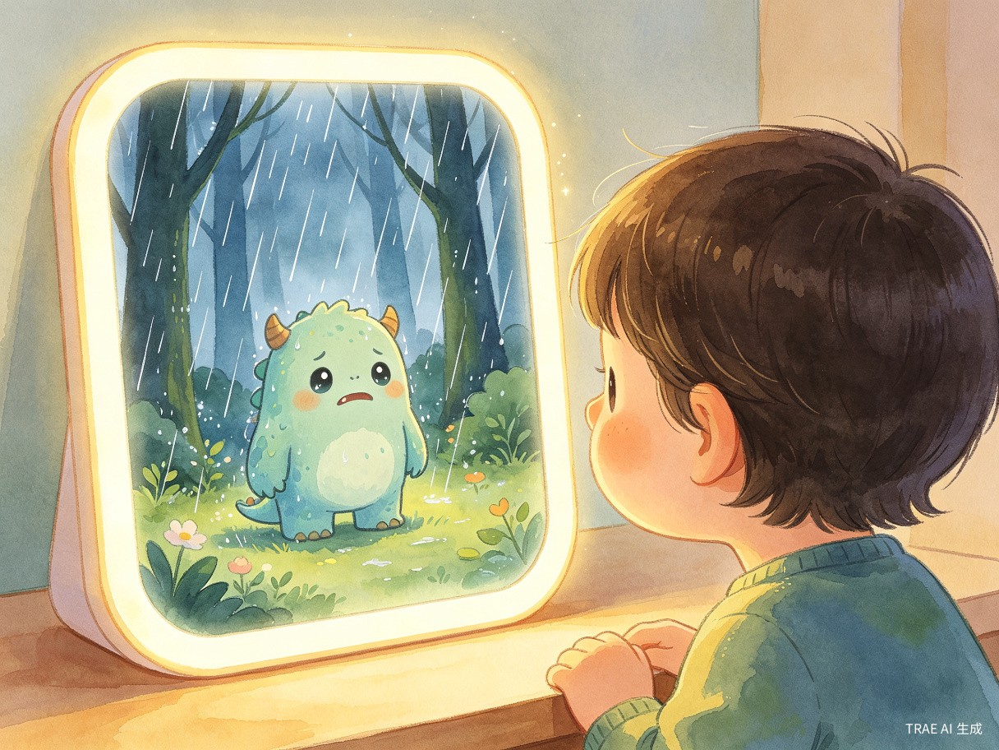
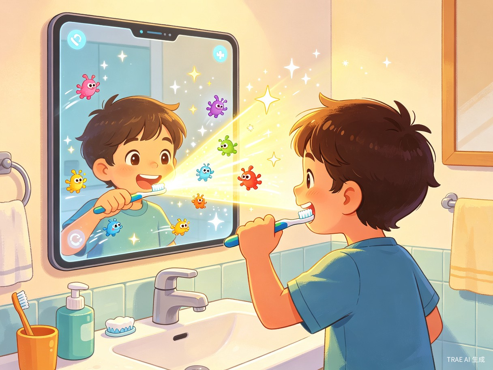
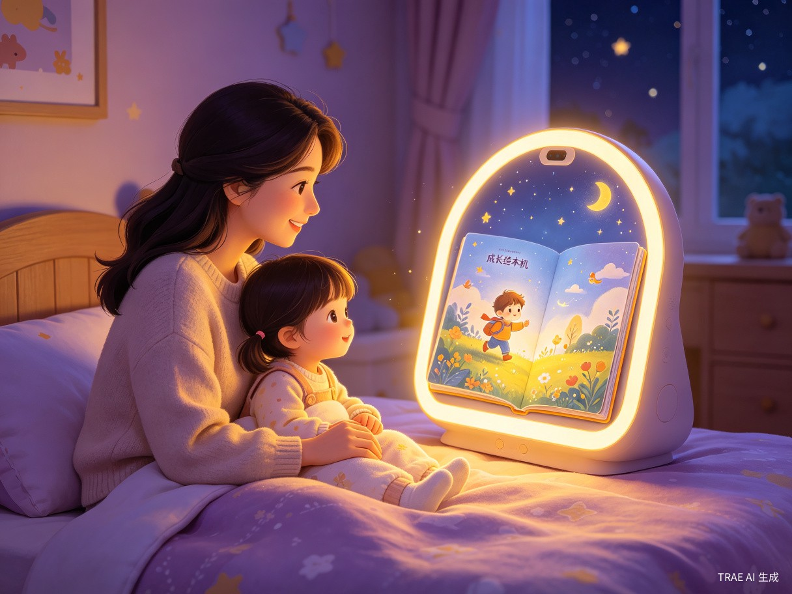

Demo 简介
是什么
面向谁
双职工父母
日均有效陪伴不足 1.2 小时，渴望高质量互动却深陷"屏幕焦虑"
隔代照护家庭
老人/保姆负责日常看护，缺乏科学育儿与情绪引导能力
0-6 岁儿童
处于情绪认知与自我认同关键期，需要安全有趣的互动方式
主要功能

🌈 情绪镜界 —— AI 共情疏导
内置 RGB-NIR 多光谱摄像头与表情语音分析模型，毫秒级捕捉孩子"开心/平静/沮丧/焦虑/生气"五种底层情绪。当孩子沮丧时，镜面化为细雨森林，AI 小怪兽温柔共情："我们一起跺跺脚，把乌云吓跑？"引导孩子通过镜像模仿释放情绪。所有数据本地边缘计算，面部图像不出设备，保障儿童隐私。

🪥 习惯幻境 —— AR 游戏化习惯养成
将刷牙、洗手等枯燥任务变成对抗"细菌小怪兽"的 AR 游戏。镜面实时识别牙刷/手的运动轨迹，孩子只有完成真实、标准的动作才能推进游戏进度，让好习惯在欢笑中自然养成，彻底解放家长督促。

📖 成长绘本机 —— 每日专属 AI 绘本
每晚睡前，AI 根据当日情绪曲线与关键成长事件（新词、第一次自主穿衣等），自动生成 3 分钟专属绘本故事，主角正是镜中孩子的模样。父母可在 App 上二次编辑配音，变成最具纪念意义的数字资产。
Demo 创作思路
灵感来源
灵感来自一个日常观察：孩子天生爱照镜子——那是他们认知自我的天然行为。然而，现有的育儿电子产品要么是蓝光伤眼的平板/手机（家长充满负罪感），要么是只能被动监控的摄像头（缺乏互动）。如果镜子能"看懂"孩子的情绪、能"长出"互动游戏，那么每一次站在镜前，都是一次高质量的陪伴时刻。我们想做的是：第一面会回应孩子的镜子。
想解决的问题
-
1
陪伴断层
双职工家庭日均有效陪伴不足 1.2 小时，"在场"不等于"陪伴"，孩子情感需求长期得不到回应。 -
2
屏幕焦虑
传统电子设备蓝光伤眼、内容被动灌输、易沉迷，家长陷入"给还是不给"的两难。 -
3
情绪失语
低龄儿童无法准确表达情绪，家长只能靠猜，反复试错加剧亲子摩擦，错过情绪教育黄金窗口。 -
4
成长黑盒
孩子的成长瞬间转瞬即逝，家长无法系统性地了解和记录发展里程碑。
为什么做这个方向
我们选择"镜面交互"作为切入点，基于以下三层判断：
护眼刚需
0-6 岁是视力发育关键期，家长对蓝光伤害极度敏感。镜面通过反射自然光成像，无直射蓝光，从根本上消除了"屏幕焦虑"。
行为原生性
照镜子是幼儿认知自我的天然仪式，不需要刻意"拿起设备"。孩子在刷牙、穿衣、情绪起伏时自然会走到镜前，交互门槛几乎为零。
情感差异化
市面上的育儿硬件集中在监控摄像头和早教平板两大红海，而"情绪识别 + 共情疏导 + 成长记录"的闭环体验尚无成熟产品，灵犀镜以"情感基础设施"的定位开辟了全新赛道。
我们的核心判断：育儿硬件的下一站，不是更聪明的监控，而是更有温度的陪伴。
灵犀镜要做的不只是一款产品，而是家庭育儿场景中的情感基础设施。